100 puzzles conçus avec soin
Une progression pensée pour approfondir la logique ou l’espace.
Knotide
Retrouvez le calme au cœur d’une toile emmêlée.
Bientôt sur l’App Store
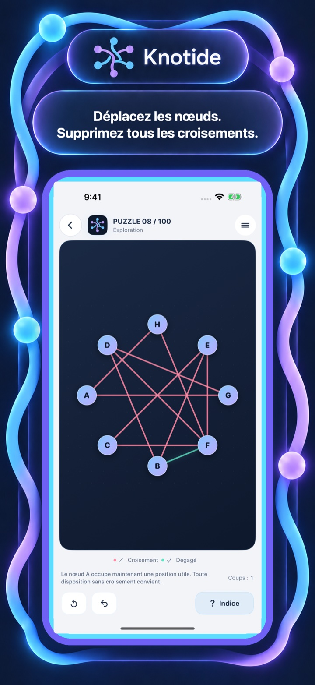
Voyez l’idée en mouvement
Les premières figures s’apprennent en quelques secondes. Les puzzles avancés densifient les connexions et réduisent les échappatoires évidentes pour créer un vrai défi spatial.
Univers de puzzles
Chaque jeu commence par une collection de 100 puzzles conçus avec soin. Une fois cette collection terminée, des défis sans fin prolongent les mêmes règles.
Une progression pensée pour approfondir la logique ou l’espace.
Continuez à explorer après la collection principale.
Réfléchissez, essayez, annulez et apprenez à votre rythme.
Dans le jeu
Les quatre vues suivent la séquence App Store approuvée : mécanique principale, puzzle avancé, état réussi, puis accueil de la collection.
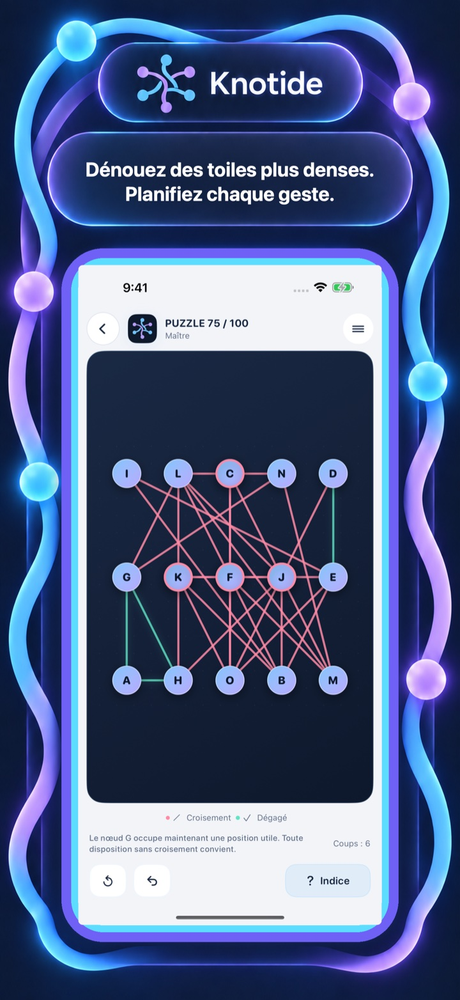
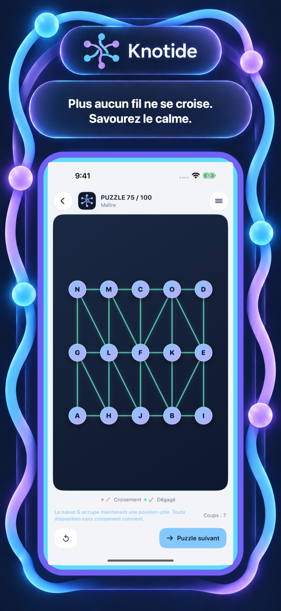
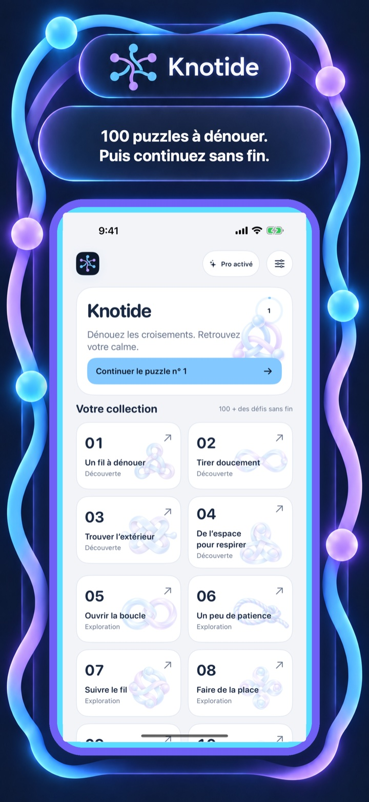
Jouable gratuitement. Pro si vous le souhaitez.
Le jeu est jouable gratuitement. La version gratuite peut afficher une publicité interstitielle après certains puzzles terminés et propose une publicité récompensée pour obtenir un indice.
L’achat unique Pro supprime les publicités et donne directement accès aux indices.
Découvrez un autre univers
Changez de mécanique sans quitter la collection.
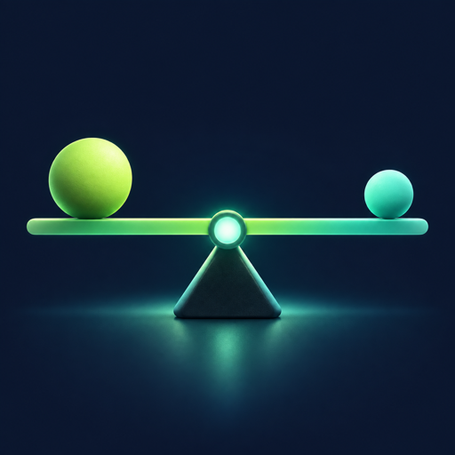
EvenbeamPlacez les poids. Équilibrez.Découvrir le jeu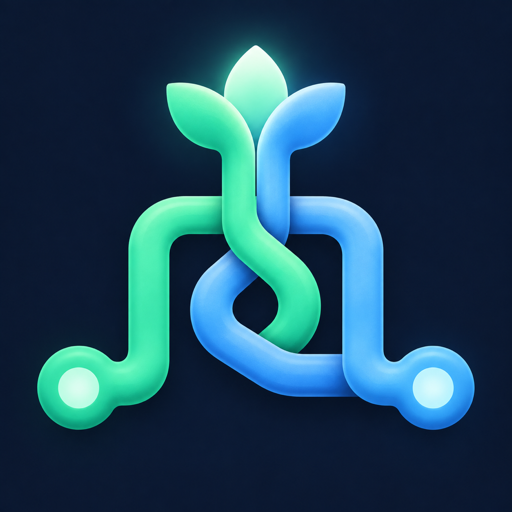
PipebloomReliez chaque chemin cachéDécouvrir le jeu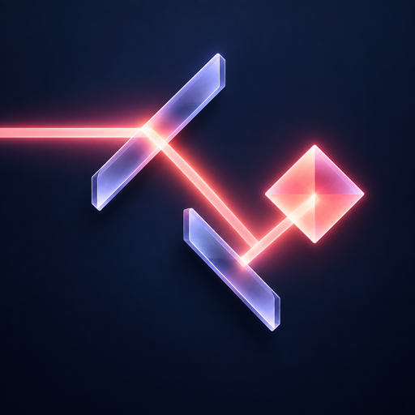
RayfoldTournez. Reflétez. Résolvez.Découvrir le jeu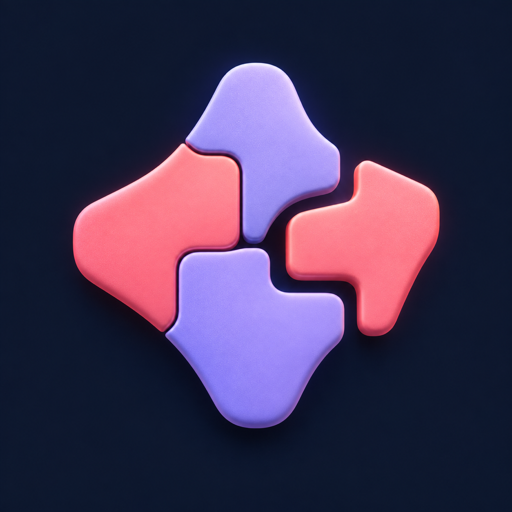
ShapletGlissez, tournez, ajustezDécouvrir le jeu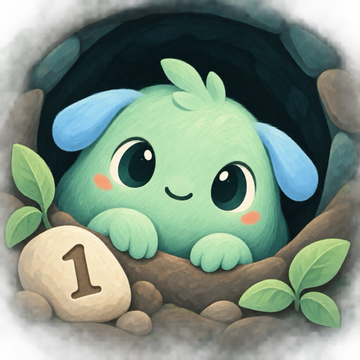
DriftlingsRamenez vos amis chez euxDécouvrir le jeu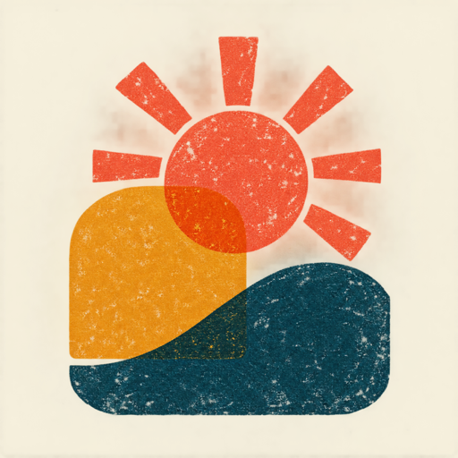
OverprintL’estampe se forme par couchesDécouvrir le jeu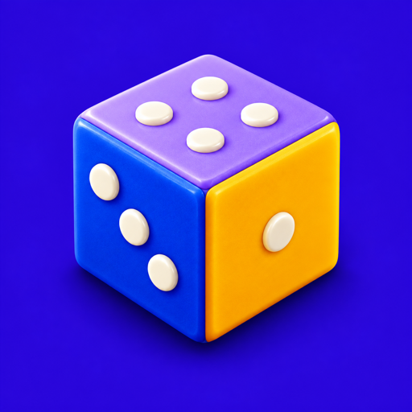
RollmarkRoulez et marquez les casesDécouvrir le jeu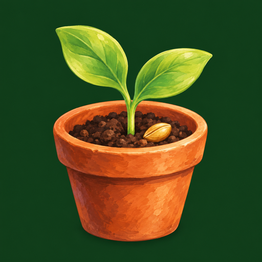
SproutboundCultivez, gardez une issueDécouvrir le jeu